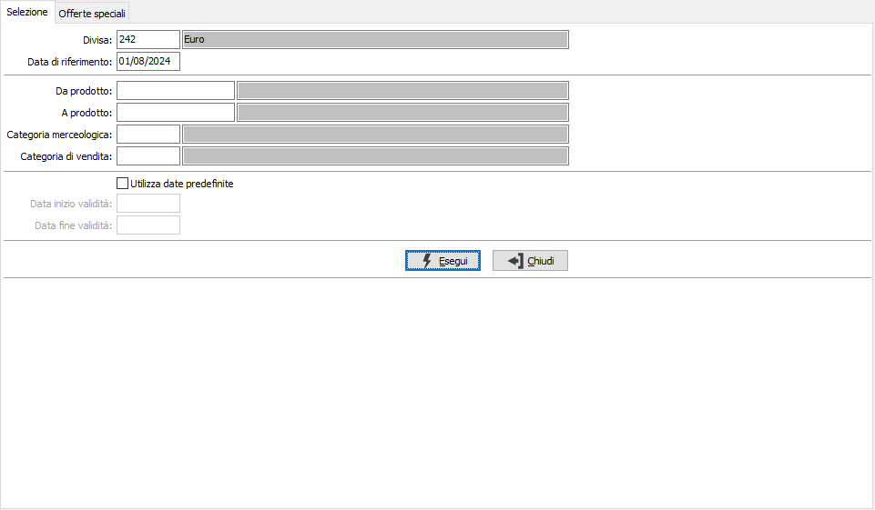
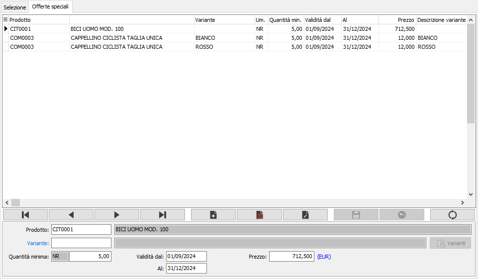
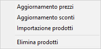
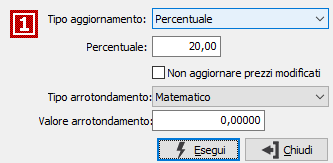
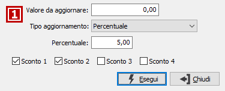
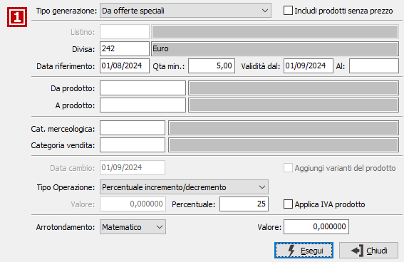

Offerte speciali
Il programma è necessario per l'inserimento e la successiva manutenzione dei dati relativi alle offerte speciali dei prodotti.
La manutenzione si struttura in due finestre (linguette), una prima che si utilizza per la richiesta della divisa, l'indicazione del periodo di riferimento e la selezione, secondo criteri specifici, dei prodotti da inserire o modificare; una seconda finestra per la vera e propria definizione della validità e manutenzione dei prezzi dell'offerta speciale.
Selezione

DIVISA: definisce il codice divisa relativo ai prezzi in offerta. Sul campo sono attive le funzioni di ricerca (F9).
DATA DI RIFERIMENTO: definisce la data, tramite cui ricercare i prezzi all'interno delle offerte speciali presenti. Saranno disponibili per la manutenzione solo quelle le cui date di validità comprendono, come periodo, la data di riferimento.
DA PRODOTTO: eventuale codice dell'articolo, presente in anagrafica Prodotti, da cui si desidera iniziare la selezione. Confermando a vuoto, la selezione inizia con il primo prodotto valido. Sul campo sono attive le funzioni di ricerca (F9).
A PRODOTTO: eventuale codice dell'articolo, presente in anagrafica Prodotti, con cui si desidera terminare la selezione. Confermando a vuoto, la selezione termina con l’ultimo valido. Sul campo sono attive le funzioni di ricerca (F9).
CATEGORIA MERCEOLOGICA: eventuale codice della categoria merceologica, riferita ai prodotti, per cui effettuare la selezione. Sul campo sono attive le funzioni di ricerca (F9).
CATEGORIA DI VENDITA: eventuale codice della categoria di vendita, riferita ai prodotti, per cui effettuare la selezione. Sul campo sono attive le funzioni di ricerca (F9).
UTILIZZA DATE PREDEFINITE: definisce se utilizzare le date sottostanti per proporre sulle nuove offerte che si inseriranno (casella con segno di spunta).
DATA INIZIO VALIDITÀ: utilizzata nel caso di spunta del campo precedente, definisce la data di inizio validità da proporre in caso di inserimenti di un nuovo prodotto in offerta.
DATA FINE VALIDITÀ: utilizzata nel caso di spunta del campo precedente, definisce la data di fine validità da proporre in caso di inserimenti di un nuovo prodotto in offerta.
Offerte speciali
In questa sezione è possibile effettuare la manutenzione dei dati selezionati; inserire manualmente nuovi prodotti, variare il prezzo di prodotti esistenti e cancellarli.

PRODOTTO: codice dell'articolo, presente in anagrafica Prodotti, per cui inserire l'offerta speciale. Sul campo sono attive le funzioni di ricerca (F9).
QUANTITA' MINIMA: è la quantità minima richiesta per applicare il prezzo dell'offerta speciale.
QUANTITA' MASSIMA: è la quantità massima richiesta per applicare il prezzo dell'offerta speciale; il campo se lasciato vuoto viene gestito in automatico ed indica fino alla quantità massima gestita (99.999.999.999); se presente un prezzo per lo stesso prodotto con quantità inferiore viene aggiornato in automatico assegnando come quantità massima la quantità minima relativa al nuovo prezzo inserito.
DATA INIZIO VALIDITÀ: definisce la data di inizio validità dell'offerta per il prodotto, campo obbligatorio, non modificabile.
DATA FINE VALIDITÀ: definisce la data di fine validità dell'offerta per il prodotto, campo obbligatorio, non modificabile.
PREZZO: prezzo in offerta relativo al prodotto nel periodo di validità indicato per una quantità maggiore o uguale a quella indicata.
SCONTI O MAGGIORAZIONI: campi, abilitati o meno in relazione al numero sconti previsto in configurazione, per inserire una percentuale di sconto o maggiorazione relativa al prodotto nelle date di validità indicate.
Se attiva la gestione dei prezzi per variante in configurazione, è presente il campo Variante e l'omonimo bottone utilizzabili se il prodotto gestisce le varianti. In caso di variante vuota il bottone si attiva e se premuto visualizza le varianti del prodotto con la possibilità di selezionare quelle da includere nel listino, le varianti vengono incluse, se non già presenti, con le stesse caratteristiche del rigo di partenza, ma senza prezzo e senza sconti; alla registrazione saranno salvate solo quelle per cui sono stati inseriti prezzi o sconti.

In questa fase, premendo il tasto destro del mouse compare un menù che consente di effettuare delle azioni riguardanti le offerte speciali attualmente in manutenzione. Tramite il menù è possibile aggiornare i prezzi dei prodotti, aggiornare gli sconti, aggiungere nuovi prodotti oppure eliminare completamente il listino.
Aggiornamento prezzi

La finestra di Aggiornamento richiede se effettuare un aggiornamento in percentuale oppure a valore ed la relativa percentuale o valore per aggiornare i prezzi. Il check box 'Non aggiornare prezzi modificati' definisce se l'aggiornamento deve riguardare anche i prodotti per cui è stato già modificato manualmente il prezzo.
Aggiornamento sconti

La finestra di Aggiornamento richiede se effettuare un aggiornamento in percentuale oppure a valore ed la relativa percentuale o valore per aggiornare gli sconti. è possibile specificare un eventuale valore di raffronto per sostituzioni mirate: ad esempio tutte le percentuali 5 diventano 7,5; è anche possibile indicare quali sconti aggiornare apponendo le apposite spunte sulle caselle presenti in basso.

TIPO GENERAZIONE: definisce il metodo di generazione dei nuovi dati. Valori possibili: prezzo di vendita, costo di mercato, costo ultimo carico, prezzo medio di carico, da listino, da offerte speciale; in base al criterio selezionato saranno attivi i criteri e le opzioni relative.
INCLUDI PRODOTTO SENZA PREZZO: consente di includere i prodotti che hanno un valore zero relativamente al prezzo selezionato come criterio di generazione (casella con segno di spunta).
LISTINO: attivo solo per generazione da listino; indica il codice del listino da cui si vuole effettuare la generazione. Sul campo sono attive le funzioni di ricerca (F9).
DIVISA: attivo solo per generazione da listino e da offerte speciale; indica il codice della divisa da cui si vuole effettuare la generazione. Sul campo sono attive le funzioni di ricerca (F9).
DATA RIFERIMENTO: attivo solo per generazione da listino e da offerte speciale; definisce la data, tramite cui ricercare i prezzi all'interno dell'eventuale listino di base o tra le offerte speciali. Saranno elaborati solo i prodotti le cui date di validità comprendono, come periodo, la data di riferimento.
VALIDITÀ DAL: definisce la data di inizio validità da inserire sui prodotti aggiunti.
VALIDITÀ AL: definisce la data di fine validità da inserire in automatico sui prodotti aggiunti.
DA PRODOTTO: eventuale codice dell'articolo, presente in anagrafica Prodotti, da cui si desidera iniziare la selezione. Confermando a vuoto, la selezione inizia con il primo prodotto valido. Sul campo sono attive le funzioni di ricerca (F9).
A PRODOTTO: eventuale codice dell'articolo, presente in anagrafica Prodotti, con cui si desidera terminare la selezione. Confermando a vuoto, la selezione termina con l’ultimo valido. Sul campo sono attive le funzioni di ricerca (F9).
CATEGORIA MERCEOLOGICA: eventuale codice della categoria merceologica, riferita ai prodotti, per cui effettuare la selezione. Sul campo sono attive le funzioni di ricerca (F9).
CATEGORIA DI VENDITA: eventuale codice della categoria di vendita, riferita ai prodotti, per cui effettuare la selezione. Sul campo sono attive le funzioni di ricerca (F9).
DATA CAMBIO: attivo solo quando la divisa di origine è diversa dalla divisa di destinazione; definisce la data del cambio da utilizzare per la conversione del prezzo del listino origine; il cambio viene ricercato nella tabella cambi listini e se non presente alla data specificata sarà ricercato alla data più recente rispetto alla data specificata.
AGGIUNGI VARIANTI DEL PRODOTTO: la casella è visibile solo se attiva la gestione dei prezzi per variante in configurazione e abilitata solo se si seleziona la generazione da costo ultimo carico o prezzo medio di carico; in questi casi la ricerca del prezzo avviene esclusivamente per variante specifica, non viene utilizzato il prezzo del solo prodotto se non viene trovato nessun valore per la variante.
TIPO OPERAZIONE: definisce un'eventuale operazione da compiere sul prezzo del prodotto; valori possibili: nessuna, divisione per valore costante, moltiplicazione per valore costante, percentuale di incremento/decremento, valore assoluto.
VALORE: indica il valore con cui effettuare l'operazione richiesta; è alternativo alla percentuale.
PERCENTUALE: indica la percentuale con cui effettuare l'operazione richiesta; è alternativa al valore.
COPIA SCONTI: combo box per definire se copiare anche gli sconti dal listino di origine o di destinazione. Valori possibili: Nessuna copia; Da origine; Prezzi netti (questa opzione azzera gli sconti dopo averli applicati al prezzo ricalcolato).
APPLICA IVA PRODOTTO: se spuntato applica al prezzo calcolato la percentuale di Iva relativa all'aliquota presente sull'anagrafica del prodotto trattato.
TIPO ARROTONDAMENTO: definisce il metodo di arrotondamento per il calcolo del prezzo: matematico, per eccesso o per difetto.
VALORE ARROTONDAMENTO: definisce il valore da utilizzare per effettuare l'arrotondamento dei prezzi.